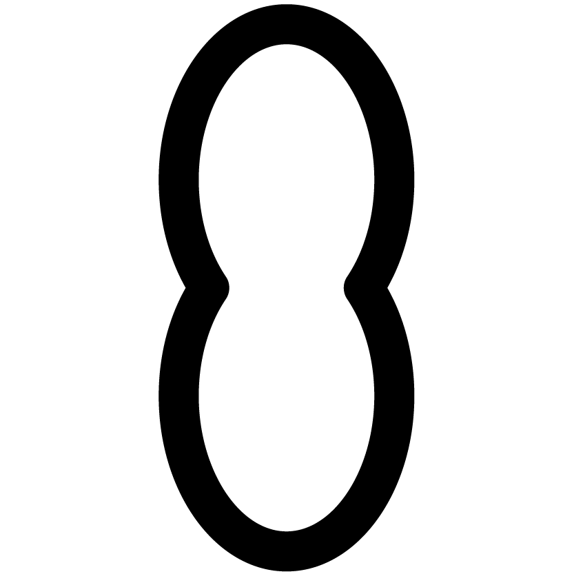

About
Kit
Receipe

떡국
_부럼&오곡밥
송편
팥죽
재료
찹쌀 300g
검은콩 50g
찰수수 50g
차조 50g
밤 50g
만드는 법
ㄱ. 밤을 제외한 오곡을 깨끗하게 씻어서 물에 헹군 후, 물에 담가 30분간 불린다.
ㄴ. 전기압력솥에 불린 오곡을 넣고 물 3컵과 고운 소금 1 티스푼을 넣는다.
ㄷ. 소금이 녹도록 골고루 섞어준 후, 백미모드로 취사를 시작한다.
ㄹ. 찰진 오곡밥이 완성되면, 주걱으로 골고루 뒤섞어준 후, 다른 그릇에 옮겨 담고 식힌다.
Jiwon Sung_
Seoul Natl’ Univ.
Department of Design
(Industrial Design)
Jimyung Woo_
Seoul Natl’ Univ.
Department of Design
(Visual Communication Design)